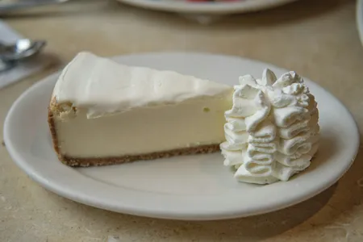

Home
New York-style Cheesecake

Description
This cheesecake has a rich, creamy texture with a dense, velvety filling,
set atop a buttery graham cracker crust. It's a classic dessert that's
perfect for any occasion!
Ingredients
- For the crust:
- 1 1/2 cups graham cracker crumbs
- 1/4 cup sugar
- 1/2 cup melted butter
- For the filling:
- 4 (8 oz) packages cream cheese, softened
- 1 1/4 cups granulated sugar
- 1 teaspoon vanilla extract
- 1/4 cup sour cream
- 4 large eggs
- 2 teaspoons lemon juice (optional)
Steps
- Prepare the crust:
- Preheat the oven to 325°F (163°C).
- In a medium bowl, combine the graham cracker crumbs and
sugar.
- Add the melted butter and stir until the mixture is well
combined.
- Press the mixture into the bottom of a 9-inch springform pan,
covering the bottom evenly.
- Bake the crust for 10 minutes.
- Remove the crust from the oven and set it aside to cool while you
prepare the filling.
- Prepare the filling:
- In a large bowl, beat the softened cream cheese with a hand mixer
or stand mixer until smooth and creamy.
- Gradually add the sugar and vanilla extract, and continue to beat
until well combined.
- Add the sour cream and lemon juice (if using), and mix until
smooth.
- Add the eggs one at a time, beating on low speed after each
addition to prevent overmixing.
- Prepare the cheesecake:
- Pour the cheesecake batter over the cooled crust in the springform
pan.
- Place the pan on the middle rack of the oven and bake for 55-60
minutes, or until the edges are set but the center is still slightly
jiggly.
- Turn off the oven and let the cheesecake cool inside with the door
slightly ajar for 1 hour.
- Then, remove it from the oven and allow it to cool completely at
room temperature.
- Refrigerate it for at least 4 hours or overnight.
- Serve:
- Once chilled, remove the cheesecake from the springform pan.
- Slice and serve plain, or top with fresh fruit, whipped cream, or
a drizzle of chocolate sauce.